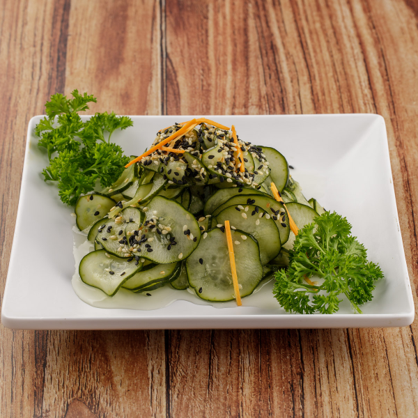
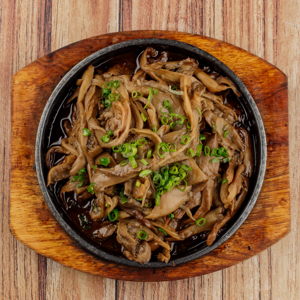
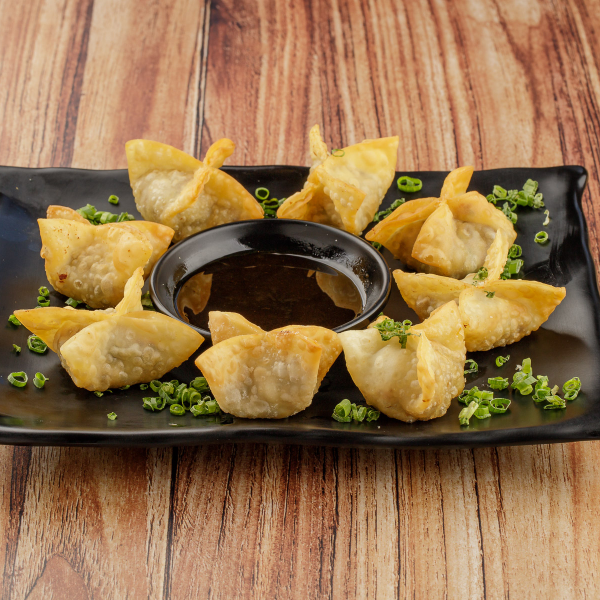
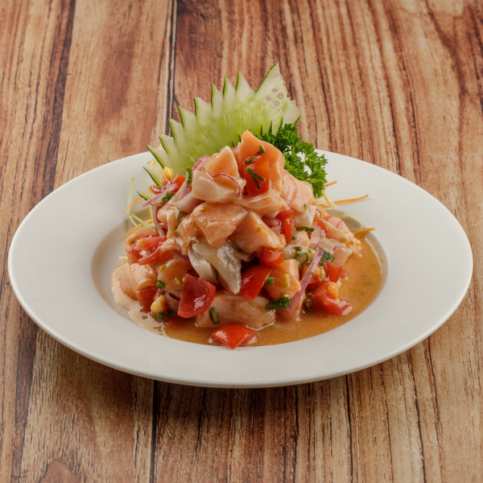
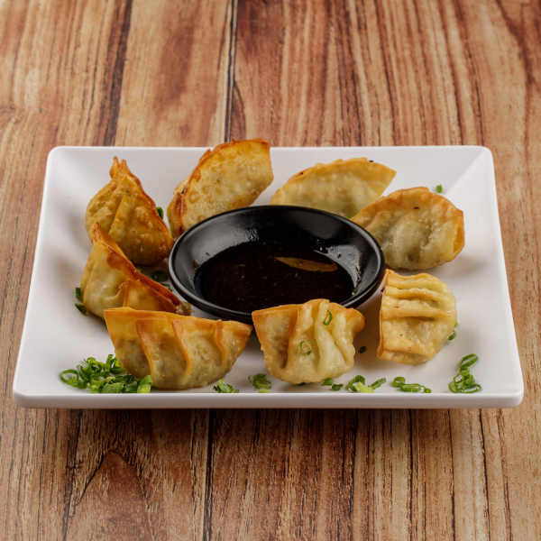
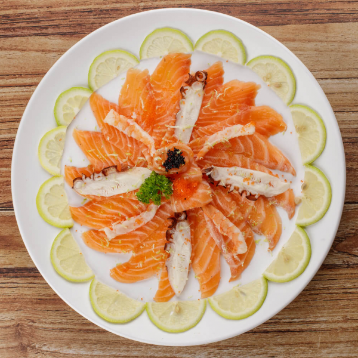
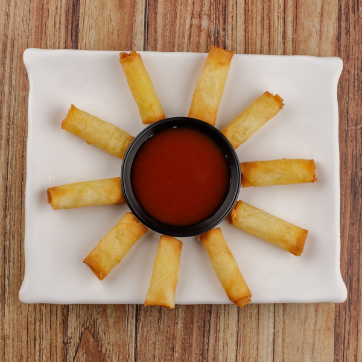

Cardápio
Nossas Especialidades
Grandes variedades de pratos e comidas japonesas no rodízio

Sunomono
Saladinha de pepino japonês em conserva, fatiado e tempero agridoce.

Porção de shimeji
Porção de cogumelos do tipo shimeji.

Trouxinha
Trouxinha de Salmão com Shimeji.

Ceviche de Salmão
Ceviche de salmão, cebola roxa, pimenta, cebolinha, limão siciliano e azeite.
Hot Roll
Enrolado de Arroz com recheio de kani-kama, salmāo, com cream cheese, empanado e frito.

Gyoza
Gyoza - culinária Japonesa.

Carpaccio Especial de Salmão
Pratos sofisticado da culinária Japonesa.


Harumaki de Queijo
Harumaki de Queijo - culinária Japonesa.
Salmão Tartar
Salmão, Azeite, Endro e sal a gosto.